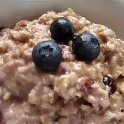

High-Protein Oatmeal for Athletes

DESCRIPTION
This breakfast contains everything an athlete needs to start off their day. A good balance of carbohydrates, fiber, and protein.
Other topping options include: raw walnuts, banana, strawberries, or flax seeds.
INGREDIENTS
- 1 cup oatmeal
- 1 scoop whey protein powder, or to taste
- ½ cup blueberries
- 2 tablespoons pumpkin seeds, or to taste
- 2 tablespoons raisins, or to taste
- ¼ cup skim milk, or as needed
DIRECTIONS
- Combine oatmeal and protein powder in a microwave-safe bowl. Add blueberries, pumpkin seeds, and raisins.
Add milk and heat in the microwave for about 1 minute. Stir before serving.
BACK